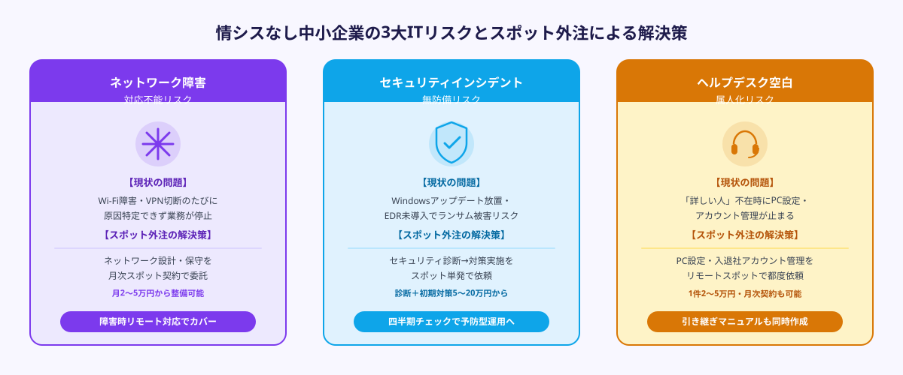
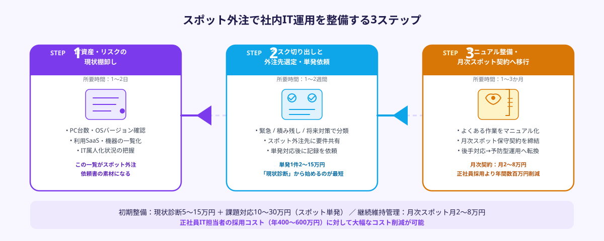

情シス不在の中小企業が直面する3つのIT課題
従業員30〜100名規模の中小企業では、情報システム部門や専任のIT担当者を置いていないケースが大半です。総務・経理担当者が「IT係」を兼務していたり、社長自身がトラブル対応したりしながらなんとか運用を続けているという話は珍しくありません。しかしこの「なんとかなっている」状態にはいくつかの深刻なリスクが潜んでいます。
課題① 障害対応の属人化とダウンタイムのロス
ネットワークがつながらない、プリンターが印刷できない、メールが届かない——こうしたトラブルが発生するたびに「詳しい人」を探して対応してもらうことになります。その人が不在のとき、有給のとき、あるいは退職したときに業務が止まる「属人化リスク」は実際に多くの中小企業で顕在化しています。IT障害1件あたりの業務停止時間が半日〜1日に及ぶケースもあり、生産性への影響は大きいです。
課題② セキュリティ対応の後手回り
ランサムウェア被害やフィッシング詐欺の標的として、中小企業が狙われるケースが増えています。専任担当者がいないとWindowsアップデートやウイルス対策ソフトの更新が後回しになり、脆弱性が放置されます。取引先の大企業からセキュリティチェックシートの提出を求められても、回答できる知識・体制がないという問題も起きています。
課題③ 新しい環境構築・移行のたびにコストと時間がかかる
テレワーク環境の整備、クラウドへの移行、新しいSaaSツール導入——こうした「一時的だが専門知識が必要な作業」のたびに、知り合いのフリーランスに頼んだり、大手SIerに見積もりを取ったりして時間とコストを費やします。大手SIerは小規模案件を嫌がる傾向があり、「相談したら断られた」「見積もりが高すぎた」という声もよく聞きます。
これら3つの課題に共通するのは「常時雇用するほどの業務量ではないが、必要なときに専門家がいない」というジレンマです。この課題を解決するのがスポット外注（単発・タスク単位での外部エンジニアへの依頼）です。
スポット外注で解決できる社内IT運用の3領域

社内IT運用のスポット外注で対応できる業務は大きく3領域に分類できます。自社の困りごとがどの領域に当てはまるかを確認しておきましょう。
領域① ネットワーク・インフラ
オフィスのWi-Fi環境構築・増強、有線LANの配線見直し、ルーター・スイッチの設定変更、VPN環境の構築、インターネット回線の乗り換えに伴う機器交換と設定——これらはいずれも「一度きり」または「数年に一度」発生する作業です。常時担当者を雇うほどではないため、スポット外注と最も相性がよい領域です。
具体的な依頼例としては、「テレワーク導入に伴ってVPN接続環境を整備したい」「Wi-Fiの電波が届かないエリアがある」「事務所を移転するので新拠点のネットワークを整えたい」などが挙げられます。ネットワーク機器の選定・購入サポートから設置・設定・動作確認まで一括でスポット外注できます。
領域② ヘルプデスク・PC設定
新しいPCのセットアップ、業務ソフトのインストールと動作確認、社員の退職・入社に伴うアカウント管理（Microsoft 365・Google Workspace等）、プリンター・スキャナーの設定、データバックアップ環境の構築——これらは発生頻度はある程度あるものの、対応は都度数時間で完結する軽作業です。
特に「入退社のたびにPC設定に半日かかる」「新しいプリンターが設定できずに1週間放置している」といった積み重なった小さな困りごとは、スポット外注で一気に解消できます。遠隔対応（リモートサポート）で完結する案件も多く、来訪費用をかけずに依頼できる場合もあります。
領域③ セキュリティ対応
ウイルス対策ソフトの導入・更新管理、Windowsアップデートの一括適用、フィッシングメール対策の設定、取引先からのセキュリティチェックシートへの回答支援、情報セキュリティポリシーの策定補助——これらは専門知識が必要ですが、定期的なスポット依頼（例：月1回・四半期に1回）で対応できます。
「取引先から情報セキュリティに関する書類を提出するよう求められたが、何をどう対応すればよいかわからない」という相談は特に増えています。スポット外注のエンジニアに状況を説明すれば、自社規模に合った現実的な対応策を提示してもらえます。
「そろそろIT担当者を採用しようか」と検討している場合、まずスポット外注で半年〜1年試してみることをおすすめします。実際に外注で依頼した業務ログが積み上がれば「どんな業務が月何時間発生しているか」が可視化され、採用すべきかどうか・どんなスキルセットが必要かを客観的に判断できます。スポット外注は採用の代替でなく、採用判断を正確にするための情報収集手段にもなります。
スポット外注でIT運用を依頼する3ステップ

STEP 1：IT困りごとの棚卸しと優先順位付け（1〜2日）
最初にやるべきことは「今どんなIT課題が積み上がっているか」を洗い出すことです。頭の中にある「いつかやらないといけない」リストを紙に書き出し、以下の観点で優先順位を付けます。
・緊急性が高い：業務が止まりかけている、セキュリティリスクがある（最優先）
・後回しにしていた積み残し：設定が中途半端、バックアップが取れていない（次優先）
・将来のリスク低減：マニュアルがない、特定の人しか対応できない（できるときに）
この一覧を作るだけでも「自社のIT運用の現状」が可視化され、スポット外注への依頼精度が大幅に上がります。一覧は1〜2枚のWordやExcelで十分です。
STEP 2：スポット外注先への要件共有と単発対応（数時間〜数日）
STEP1で作成した一覧をもとに、スポット外注先に依頼内容を共有します。伝えるべき情報は次のとおりです。
・現状起きている問題（症状）と、いつから発生しているか
・使用しているPC・OS・機器（メーカー・型番）
・社内で使っているソフトウェア・クラウドサービス（Microsoft 365／Google Workspace等）
・従業員数と拠点数（オフィスが複数ある場合）
・過去に同様のトラブルが起きた経緯（あれば）
これらの情報があれば、エンジニアは即座に対応方針を提示できます。情報が不完全な状態でも「まず相談」から始めてもらえるスポット外注サービスが多いため、「うまく説明できるか不安」という場合も遠慮なく連絡してください。
単発対応後は、対応内容の記録を依頼します。「何をどう直したか」「なぜそうなっていたか」を簡単なメモでよいので残してもらうことで、次のトラブル時に原因特定が早くなります。
STEP 3：運用マニュアル整備と定期依頼への移行（1〜3か月）
複数回のスポット対応を経て、「月に何件・どんな種類のITトラブルが発生しているか」のパターンが見えてきます。この段階で、スポット外注のエンジニアと一緒に「社内IT運用マニュアル」を整備しましょう。マニュアルがあることで、次のような効果が得られます。
・よくあるトラブル（例：プリンターの再起動方法、Wi-FiパスワードのリセットなどLv.1の操作）は社員自身が対応できるようになり、外注コストが下がる
・スポット外注のエンジニアが変わっても、引き継ぎがスムーズになる
・新入社員のPC設定など定型作業のチェックリスト化で時間が読みやすくなる
月1回の定期チェック（セキュリティ状況確認・アップデート適用・バックアップ確認）をスポット外注で依頼することで、「気づいたらトラブルが起きていた」という後手回りの対応から、予防型の運用に切り替えられます。
ANKENでは、ネットワーク設定・PC環境構築・セキュリティ対応などの社内IT運用を単発単位で依頼できるエンジニアをご紹介しています。「どこに頼めばいいかわからない」「まず現状を診てほしい」という相談も承ります。初回相談は無料です。
👉 無料で相談する（社内IT運用をスポット外注で依頼する）ネットワーク・セキュリティ・ヘルプデスク経験を持つエンジニアを最短1週間でご紹介します。
費用感とスポット外注が向く企業タイプ
社内IT運用のスポット外注にかかる費用は、依頼内容の複雑さと対応時間によって異なります。
単発トラブル対応の費用目安
ネットワーク障害の調査・復旧（2〜4時間の作業）であれば2〜5万円が目安です。PC初期設定（1台・基本ソフト導入込み）は1〜3万円、VPN環境の新規構築（拠点数・接続機器数による）は5〜15万円程度です。セキュリティチェックシートへの回答支援（1〜2時間のリモート相談）は1〜3万円で対応できます。いずれも「必要なときだけ」発注するため、月額固定費が発生しません。
定期保守契約の費用目安
月1回・リモートでのセキュリティ状況確認・アップデート管理・バックアップ確認（月2〜3時間の作業）であれば月5〜10万円が目安です。月1回の訪問対応込みの場合は月10〜20万円程度です。専任の情シス担当者を採用する場合のコスト（年収400〜600万円＋社会保険料）と比較すると、スポット外注は「必要な業務量が月20〜40時間未満」の企業では圧倒的にコスト効率が高い選択肢です。
スポット外注のIT支援が特に向く企業タイプ
以下に当てはまる企業は特にスポット外注の恩恵を受けやすいです。
・従業員数10〜50名規模で情報システム部門がない
・現在、総務や経理がIT対応を兼任していて業務負荷になっている
・半年以内にオフィス移転・拡張を予定している
・取引先からセキュリティ要件の整備を求められている
・クラウド移行（Microsoft 365／Google Workspace等）を検討しているが進んでいない
・RPAや業務システム導入後のメンテナンスが追いついていない
逆に、月40時間以上のIT業務が常態化している場合や、機密情報の取り扱い上、外部委託に制約が強い業種（一部の医療・金融等）は、専任採用やMSP（マネージドサービスプロバイダー）との顧問契約の方が適している場合もあります。自社の業務量を把握した上で、スポット外注と他の選択肢を比較することをおすすめします。
よくある質問
- Q. 社内のネットワーク構成や機器情報をうまく説明できなくても依頼できますか？
- A. 問題なく依頼できます。「Wi-Fiがつながらない」「プリンターが使えない」といった症状だけ伝えれば、エンジニアがヒアリングしながら状況を把握します。
- Q. リモート対応と現地対応はどう使い分ければよいですか？
- A. PC設定やソフト設定はリモートで完結することが多く費用も安くなります。機器の物理的な設置・配線が必要な作業は現地対応が必要です。スポット外注先と相談して決めるとよいでしょう。
- Q. 情報漏洩が心配です。社内の機密情報を外部に見せて大丈夫ですか？
- A. 依頼前に秘密保持契約（NDA）を締結することで情報漏洩リスクを低減できます。ANKENでは案件マッチング時に情報管理ポリシーを確認していますので、ご相談ください。
まとめ
情シス専任者がいない中小企業の社内IT運用は、スポット外注を活用することで月額固定費ゼロ・必要なときだけの専門家対応に切り替えられます。ネットワーク・インフラ、ヘルプデスク・PC設定、セキュリティ対応という3領域のうち、自社で今最も困っている部分からスポット外注を試すのが最も確実な進め方です。
導入のポイントは3つです。①IT困りごとを一覧化してスポット外注への依頼精度を上げる、②単発対応後は対応記録を残してもらい次のトラブルへの備えにする、③複数回の利用を経て定期保守契約や運用マニュアル整備へとステップアップする。「詳しい人に頼むしかない」という属人的な運用から脱却し、外部エンジニアをチームの一員のように使いこなす体制を整えましょう。